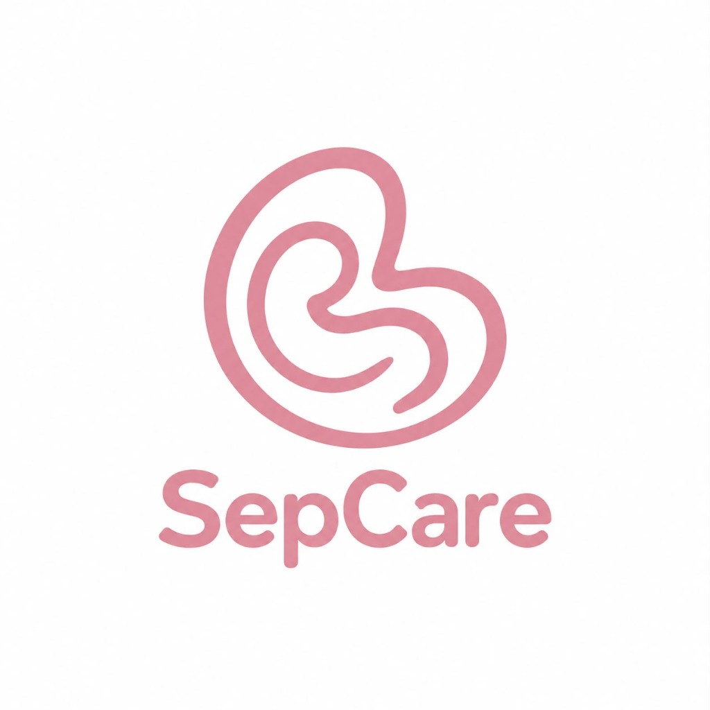

Continuous Neonatal Telemetry
SepCare
Real-time physiological monitoring & early sepsis triage for newborns.
Initializing telemetry sensors...

Real-time physiological monitoring & early sepsis triage for newborns.
Initializing telemetry sensors...